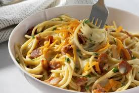

Ingredients
3 Tbsp. kosher salt, plus more
4 oz. guanciale (salt-cured pork jowl), pancetta (Italian bacon), or bacon
2 oz. Parmesan
4 large egg yolks
2 large eggs
Freshly ground black pepper
2 Tbsp. extra-virgin olive oil
1 lb. spaghetti, bucatini, or rigatoni
Carbonara

The History of Carbonara
Description
Carbonara is an Italian pasta dish from Rome, made with egg, hard cheese, cured pork, and
black pepper. The cheese is usually Pecorino Romano, Parmigiano-Reggiano, or a combination of the two. Spaghetti is the most
common pasta, but fettuccine, rigatoni, linguine, or bucatini are also used. Normally guanciale or pancetta are used for
the meat component, but lardons of smoked bacon are a common substitute outside Italy.
Preparation
Heat 6 qt. water in a large pot over high. When water starts to steam, add 3 Tbsp. salt and cover pot with a
lid (this
will bring water to a boil faster).
While you are waiting on the water, do a little prep. Remove 4 oz. guanciale from packaging and cut into
about 1x¼"
strips. Finely grate 2 oz. cheese and set aside one-quarter of cheese for later.
Whisk 4 egg yolks and 2 whole eggs in a medium bowl until no streaks remain, then stir in remaining grated
cheese. Add
several cranks of pepper and set aside.
Working next to pot, heat 2 Tbsp. oil in a large Dutch oven or other heavy pot over medium. Add guanciale
and cook,
stirring occasionally, until crisp around the edges, 7–10 minutes.
Remove pot from heat. Using a wooden spoon, fish out guanciale and transfer to a small bowl. Pour fat into a
heatproof
measuring cup, then add back about 3 Tbsp. to pot. Discard any remaining fat.
Cook 1 lb. pasta in boiling water, stirring occasionally, 2 minutes shy of package instructions. Just before
pasta is
finished, scoop out 1¾ cups pasta cooking liquid with same heatproof measuring cup.
Add 1 cup reserved pasta cooking liquid to Dutch oven and bring to a boil over medium-high. Drain pasta in a
colander,
then transfer to Dutch oven.
Cook pasta, stirring constantly and vigorously, until al dente and water is reduced by about half, about 2
minutes.
Remove pot from heat.
Whisk ¼ cup pasta cooking liquid into reserved egg mixture, then very slowly stream into Dutch oven,
stirring
constantly, until cheese is melted and egg is thickened to form a glossy sauce. Season with salt, if needed.
Thin sauce
with remaining ½ cup pasta cooking liquid, adding a tablespoonful at a time, until it's the consistency of
heavy cream
(you most likely won’t use all of it).
Mix in guanciale and divide pasta among bowls. Top with pepper and reserved cheese.
Reviews